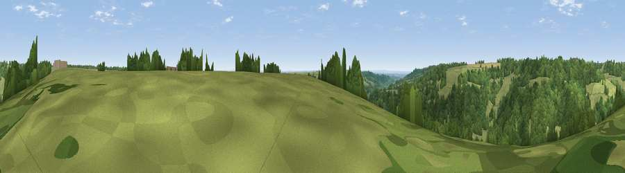

Viewpoint near Ozleworth
#42762 in England · top 84% of its area beats it · near Ozleworth · access?Where it is
The exact computed spot (ST 80375 94025). Click the marker for map links.
Public access: no public right of way or access land is recorded at this exact spot — it may be on private land. Computed from Natural England's CRoW access layer and OpenStreetMap rights of way — not the legal definitive map. Always verify locally.
The view, rendered

A 360° render of this exact spot computed from the terrain model, tree cover and land cover — summer colours, afternoon light, calibrated against photographs of famous viewpoints. Real trees, hedges and buildings will differ in detail.
The panorama
Grey silhouette: terrain skyline in each direction (720 bearings, Earth curvature and refraction included). Dashed green: skyline with trees (+15 m) and buildings (+8 m) as obstacles. Blue strip: how far the ground is visible on each bearing.
Where the view opens
Wedge length = distance to the farthest visible ground on that bearing (vegetation-aware). Rings at 10, 25 and 50 km.
What fills the view
54% woodland · 41% grassland · 5% cropland
Angular shares of the visible panorama (visual magnitude), not map area. Landscape diversity 0.37 (0–1 Shannon).
Key numbers
More beautiful places nearby
The staircase of upgrades: each row has a higher view potential than everything closer. Driving times are estimates from straight-line distance, calibrated against real road routing — check an actual route before setting out.
| Place | Direction | Drive | Score |
|---|---|---|---|
| Viewpoint near Ozleworth | S · 1 km | ~2 min | 34.5 |
| Viewpoint near Wortley | WSW · 3 km | ~8 min | 67.8 |
| Wotton Hill | W · 5 km | ~11 min | 70.7 |
| Viewpoint near North Nibley | W · 6 km | ~12 min | 76.3 |
| Viewpoint near Nympsfield | N · 8 km | ~15 min | 77.5 |
| Viewpoint near Stinchcombe | WNW · 8 km | ~16 min | 80.5 |
| Nottingham Hill | NNE · 39 km | ~58 min | 80.9 |
| Chase End Hill | N · 42 km | ~61 min | 81.5 |
51.64468, -2.28502 · source: screening · position refined by local search. Computed location — check access rights before visiting.